Анализ информационных моделей · Графы и таблицы
📖 Открыть теорию к заданию 1 →Задание 1 ЕГЭ по информатике проверяет умение представлять, считывать и анализировать данные в разных типах информационных моделей. В качестве информационной модели чаще всего используются графы.
Это задание базового уровня сложности, на его решение отводится около трёх минут. Вам предстоит проанализировать рисунок графа и таблицу к нему, чтобы однозначно соотнести значения в таблице с информацией на графе.
💡 Как решать? Задание решается аналитически — через сопоставление данных. Программное решение возможно как вспомогательный инструмент для сложных графов, но основная работа — это логический анализ. На экзамене важно уметь рассуждать, а не просто запускать код.
В задании 1 ЕГЭ встречаются три типа формулировок. Во всех вариантах даётся схема дорог в виде графа и таблица к нему. Таблица может быть:
| Тип | Что дано | Что требуется | Сложность |
|---|---|---|---|
| Тип 1 | Граф + матрица смежности | Сопоставить номера пунктов с буквенными обозначениями | ⭐ |
| Тип 2 | Граф + весовая матрица | Сопоставить номера и найти сумму длин дорог | ⭐⭐ |
| Тип 3 | Граф + весовая матрица | Сопоставить номера, найти длины и кратчайший путь | ⭐⭐⭐ |
Самый простой тип. Дан граф и матрица смежности (звёздочки). Нужно определить, какие номера в таблице соответствуют указанным буквам на графе.
Формулировка: «На рисунке схема дорог N-ского района изображена в виде графа, в таблице звёздочкой обозначено наличие дороги. Каждому населённому пункту на схеме соответствует его номер в таблице, но неизвестно, какой именно номер. Определите, какие номера могут соответствовать пунктам B и E. В ответе запишите эти два номера в возрастающем порядке без пробелов и знаков препинания.»
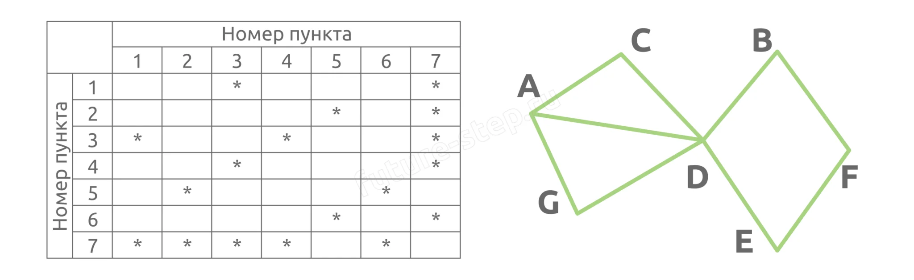
Степень вершины — это количество дорог, выходящих из неё. На рисунке обозначим степени оранжевым цветом.
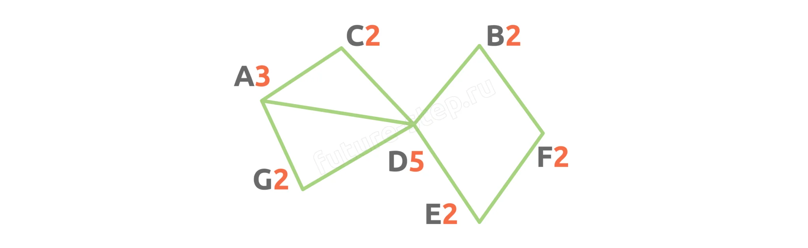
1 Вершина D — единственная со степенью 5. Ищем в таблице строку с 5 звёздами — это строка 7. Значит, D = 7.
2 Вершина A — единственная со степенью 3. Находим строку с 3 звёздами — это строка 3. Значит, A = 3.
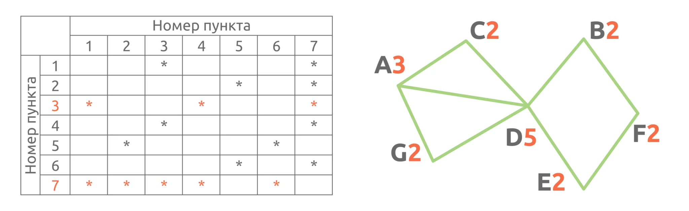
3 Вершины C и G обе имеют степень 2 и связаны с A и D. В таблице ищем столбцы, пересекающиеся и с 3, и с 7 — это столбцы 1 и 4. Точно какая из них C, а какая G — пока неясно (граф симметричен).
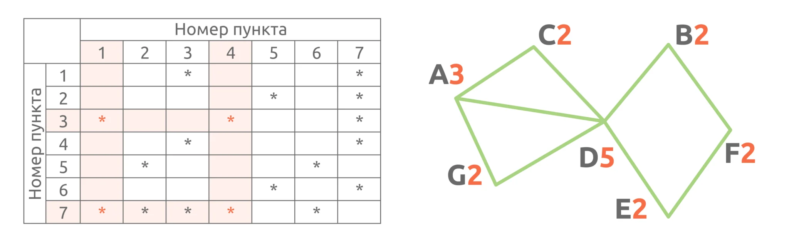
4 Вершина F — единственная, которая не соединена с уже известными вершинами 3, 7, 1, 4. Смотрим в таблицу: строка 5 не пересекается с ними. Значит, F = 5.
5 Оставшиеся вершины — B и E. Обе имеют степень 2 и связаны с D и F. В таблице это строки 2 и 6.
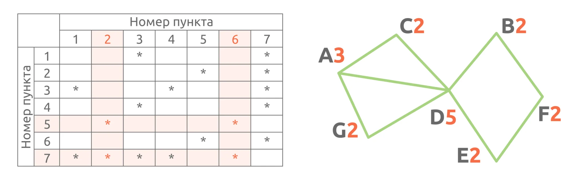
Формулировка: «Определите, какие номера могут соответствовать пунктам G и D. В ответе запишите эти два номера в возрастающем порядке.»
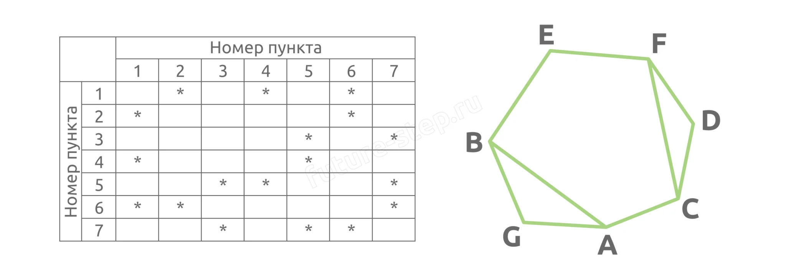
💡 Когда граф сложный и нет очевидных «особенных» вершин, можно использовать программный перебор. Программа сама переберёт все возможные сопоставления букв и номеров и найдёт единственно верное.
В этом решении мы используем функцию permutations() из модуля itertools. Она генерирует все возможные перестановки переданных элементов — в нашем случае, все варианты сопоставления букв вершин с номерами.
Чтобы использовать функцию, нужно импортировать её из модуля: from itertools import permutations. Импорт — это способ сказать Python: «загрузи готовый код из библиотеки itertools и дай мне доступ к функции permutations».
# Импортируем функцию permutations из модуля itertools from itertools import permutations # Список рёбер графа: каждая пара букв — связь между вершинами graph = 'BE EF FD DC CA AG GB BA CF'.split() # Матрица смежности: для каждой строки — номера столбцов со звёздочкой matrix = '246 26 57 15 347 127 356'.split() print(*range(1, 8)) # Перебираем все перестановки букв и ищем подходящую for i in permutations('ABCDEFG'): if all(str(i.index(x) + 1) in matrix[i.index(y)] for x, y in graph): print(*i)
Как работает программа:
.split().Программа выдаст:
1 2 3 4 5 6 7 B G D E F A C
Следовательно: G = 2, D = 3.
В этом типе заданий дана весовая матрица (числа — длины дорог). Нужно не только сопоставить номера с буквами, но и найти сумму длин указанных дорог.
Формулировка: «Определите, какова сумма протяжённостей дорог из пункта D в G и из пункта A в C.»
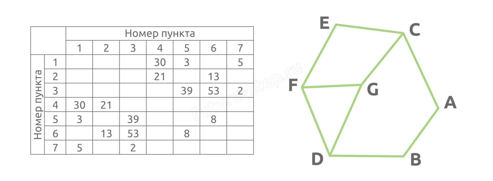
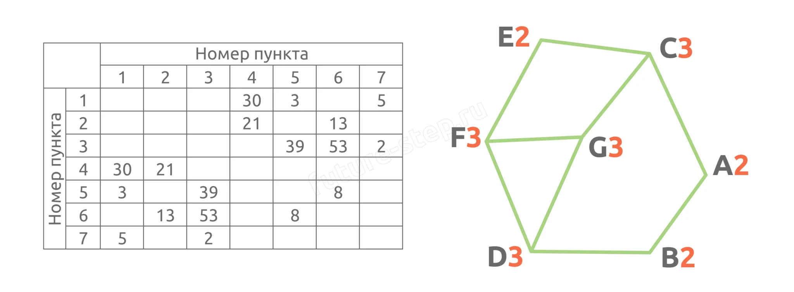
1 Вершина E (степень 2) соединяется с двумя тройными вершинами. В таблице находим строку с двумя числами, где оба соседа — тройные. Это строка 7. E = 7.
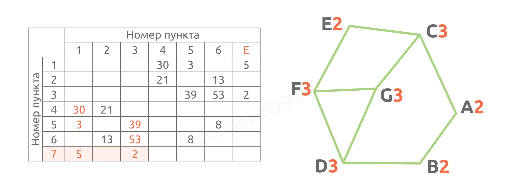
2 Вершина G (степень 3) соединяется с тремя тройными вершинами. Ищем строку с тремя числами, где все соседи тройные — это 5. G = 5.
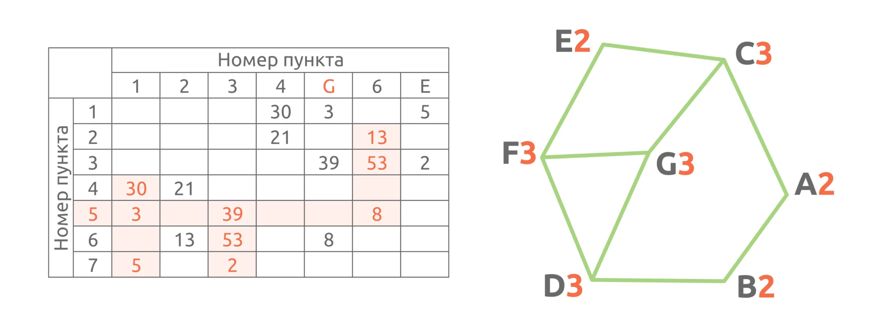
3 Вершины F и C — обе тройные и обе связаны с E(7) и G(5). Смотрим:
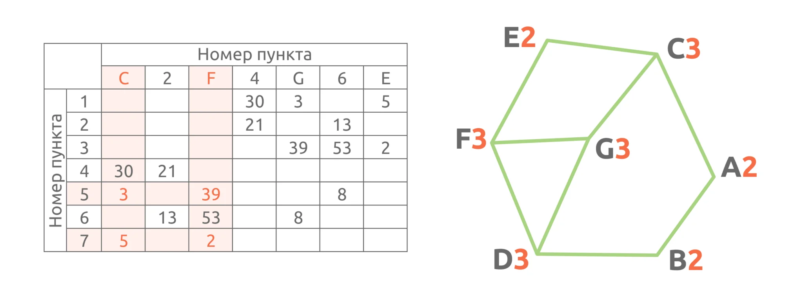
4 Оставшаяся тройная вершина D — это 6.
5 Вершины A и B — оставшиеся двойные: B = 2 (связана с D(6)), A = 4 (связана с C(1)).
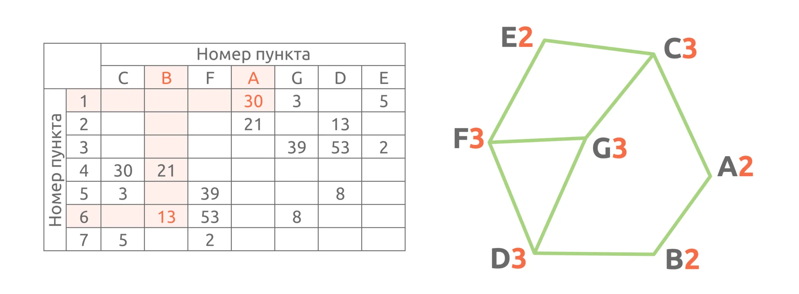
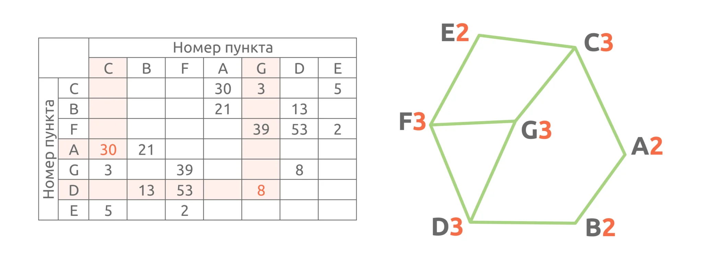
AC = 30, DG = 8. Сумма = 38.
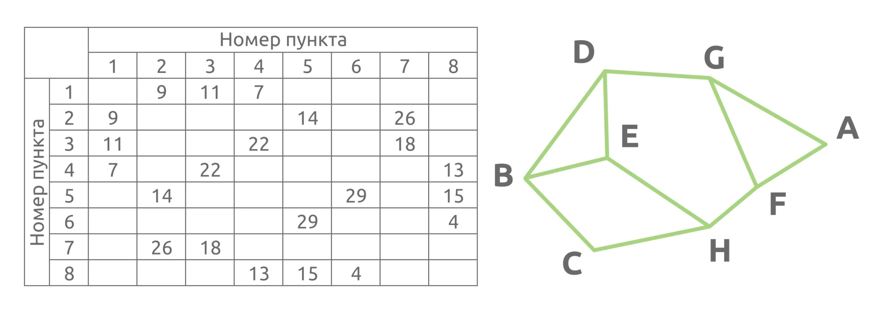
from itertools import permutations graph = 'BD DG GA AF FH HC CB BE ED EH GF'.split() matrix = '234 157 147 138 268 58 23 456'.split() print(*range(1, 9)) for i in permutations('ABCDEFGH'): if all(str(i.index(x) + 1) in matrix[i.index(y)] for x, y in graph): print(*i)
Программа выдаст:
1 2 3 4 5 6 7 8 E H B D F A C G
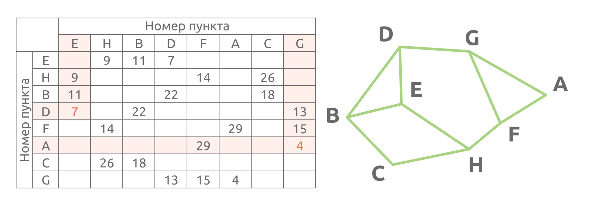
AG = 7, DE = 4. Сумма = 11.
Самый редкий и объёмный тип. Нужно сопоставить номера с буквами, определить длины дорог и найти кратчайший путь между двумя пунктами. Решается ручным перебором вариантов (обычно 3–4 пути).
Формулировка: «Определите длину кратчайшего пути из пункта А в C. В ответе запишите целое число — длину пути в километрах.»
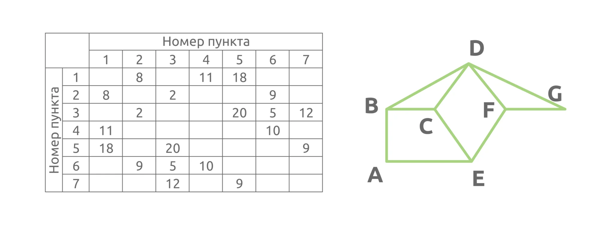
from itertools import permutations graph = 'AB BD DG EA BC CD CE EF DF FG'.split() matrix = '245 136 2567 16 137 234 35'.split() print(*range(1, 8)) for i in permutations('ABCDEFG'): if all(str(i.index(x) + 1) in matrix[i.index(y)] for x, y in graph): print(*i)
Результат:
1 2 3 4 5 6 7 E C D A F B G
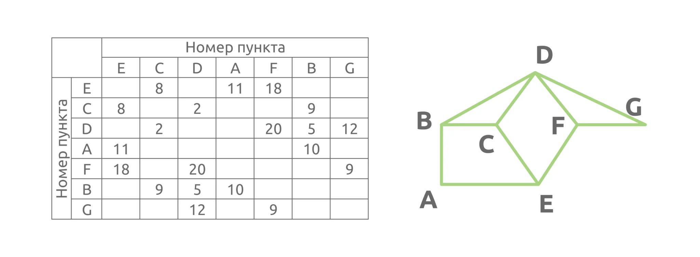
Рассмотрим несколько вариантов:
Путь 1: A → B → C
Длина: 10 + 9 = 19 км.
Путь 2: A → E → C
Длина: 11 + 8 = 19 км.
Путь 3: A → B → D → C
Длина: 10 + 5 + 2 = 17 км.
💡 Важный вывод: путь из трёх рёбер (A–B–D–C) оказался короче, чем пути из двух рёбер (A–B–C и A–E–C). Меньше рёбер — не всегда короче! Всегда проверяй все возможные маршруты.
Материалы для самостоятельной практики появятся здесь позже.
Здесь будут размещены реальные варианты заданий для отработки навыков.